むぎゅ〜〜〜〜っ [梅吉]
クリアハンモックを覗き込む梅吉さん。
興味を持ってもらえる様にレジ袋の丸めたの（大好き）
おもちゃのマタタビクッキーなど入れてみました。
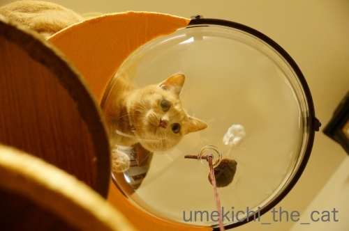
クリアハンモックから下がっているのはデフォルトのおもちゃ。
興味を持ったのは１〜2日だけだったので写真撮影のためにも取っちゃおうかしら・・・

ていっ
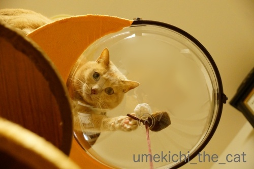
真下でカメラを構える下僕の観察も怠りません＾＾

大きく身を乗り出して

がぶ〜っ。
良いお顔ですねー0(≧▽≦)0
っと、ここでバランスを崩して

肉球、肉球！にくきゅーーーーーうぅぅぅ！！！
・・・・・でも、ちょっとわかりにくい写真ですよね。
引っ張った割にはむぎゅっとした肉球写真はこれしか撮れてませんw
申し訳ないです。
と、ここまでが予定稿だったのですが・・・
一昨日夜、梅吉は高いところが好きだからハンモックをてっぺんに付け替えよう！
そうすればもっと積極的に入るかも、とおっとが手直ししてくれました。
ステップも登りやすい様に位置を変えたり。
更にささみとマタタビ粉をまぶした羊毛ボールで梅吉を誘導。
（デフォルトのおもちゃは取り外しました）
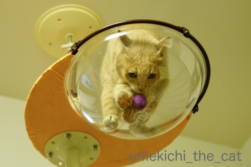
来たっ！

0(≧▽≦)0ヾ(*ΦωΦ)ﾉ(๑˃̵ᴗ˂̵)و (｣ﾟﾛﾟ)｣ (*>艸<)

この写真はむぎゅっとした肉球は写ってませんがポーズ可愛かったから採用w
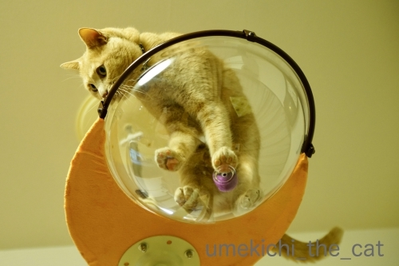
拡大します。
_batch.jpg)
むぎゅ〜〜〜〜〜〜〜っ♡
いかがでしょうか。
ハンモックに入ることに抵抗はない様なのでこの先もきっと色々な姿を見せてくれるはず＾＾
後はどうやったらうまく肉球を写す事が出来るか、飼い主の試行錯誤になりそうです。
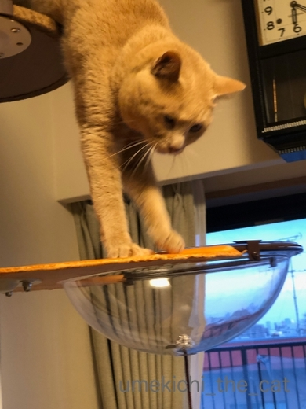
降りる時はこんな風に垂直になって上手におりてきます。
ステップの上段でまどろっこしくなって飛び降りるか、と思いましたが
意外や意外、ちゃんと下までステップを使って降りてきます。
怪我する心配が少し減りました＾＾
 ↑ガブッと一押し↑
↑ガブッと一押し↑
興味を持ってもらえる様にレジ袋の丸めたの（大好き）
おもちゃのマタタビクッキーなど入れてみました。
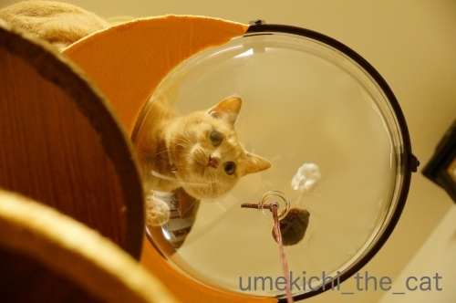
クリアハンモックから下がっているのはデフォルトのおもちゃ。
興味を持ったのは１〜2日だけだったので写真撮影のためにも取っちゃおうかしら・・・

ていっ
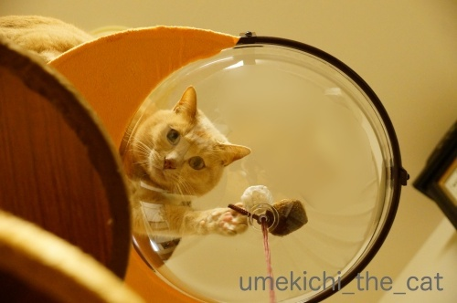
真下でカメラを構える下僕の観察も怠りません＾＾

大きく身を乗り出して

がぶ〜っ。
良いお顔ですねー0(≧▽≦)0
っと、ここでバランスを崩して

肉球、肉球！にくきゅーーーーーうぅぅぅ！！！
・・・・・でも、ちょっとわかりにくい写真ですよね。
引っ張った割にはむぎゅっとした肉球写真はこれしか撮れてませんw
申し訳ないです。
と、ここまでが予定稿だったのですが・・・
一昨日夜、梅吉は高いところが好きだからハンモックをてっぺんに付け替えよう！
そうすればもっと積極的に入るかも、とおっとが手直ししてくれました。
ステップも登りやすい様に位置を変えたり。
更にささみとマタタビ粉をまぶした羊毛ボールで梅吉を誘導。
（デフォルトのおもちゃは取り外しました）
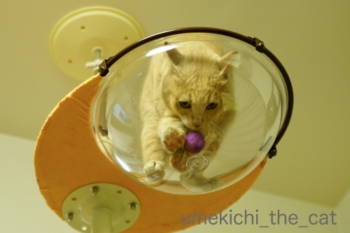
来たっ！

0(≧▽≦)0ヾ(*ΦωΦ)ﾉ(๑˃̵ᴗ˂̵)و (｣ﾟﾛﾟ)｣ (*>艸<)

この写真はむぎゅっとした肉球は写ってませんがポーズ可愛かったから採用w
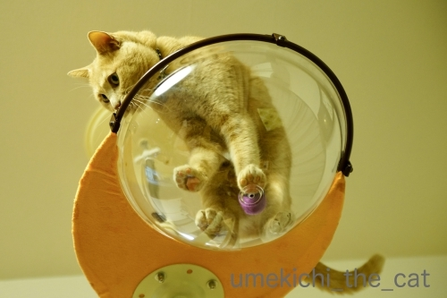
拡大します。
_batch.jpg)
むぎゅ〜〜〜〜〜〜〜っ♡
いかがでしょうか。
ハンモックに入ることに抵抗はない様なのでこの先もきっと色々な姿を見せてくれるはず＾＾
後はどうやったらうまく肉球を写す事が出来るか、飼い主の試行錯誤になりそうです。
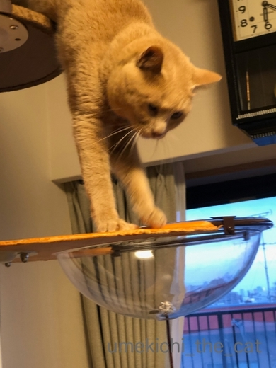
降りる時はこんな風に垂直になって上手におりてきます。
ステップの上段でまどろっこしくなって飛び降りるか、と思いましたが
意外や意外、ちゃんと下までステップを使って降りてきます。
怪我する心配が少し減りました＾＾
にゃん生における大きな一歩 [梅吉]
さてさて、キャットタワーを初めて見た梅吉さん。
組み立てている途中から登ったりして大変かな、と思ったのですが
彼ももうすぐ４ちゃい。
それなりの分別がついたのか組み立てている間はおとなしく見守ってくれました＾＾
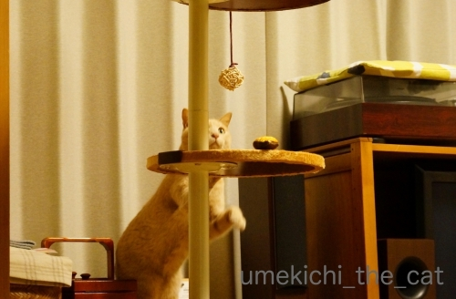
設置が終わると新しもの好きな梅吉さんはすぐに食いつきますよw
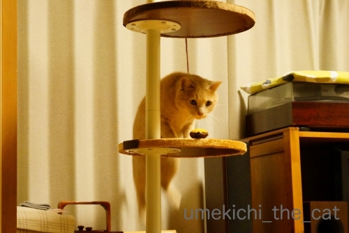
おおおお〜！記念すべきキャットタワーへのファーストステップ。
後ろあちの勢いをお楽しみください＾＾

おもちゃにもすぐに反応。とりあえず試してみなくちゃね！

常に高みを目指す漢、梅吉。

うまいこと体をひねって
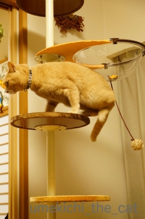
登って行きます(≧▽≦)

いきなりてっぺんを目指すのか！と思ったら
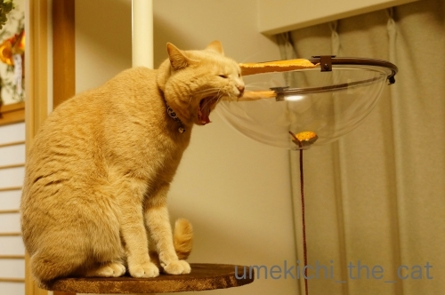
余裕のあくびです(⌒-⌒;
じらすんだから、もう〜！

クリアハンモックのステップに！

不思議そうにのぞいていますよ。

きた、きた、キターッ♪───Ｏ（≧∇≦）Ｏ────♪
このアングルがたまりません・・・
続きます。引っ張りますよ(*>艸<)
このクリアハンモック、ウワサには聞いてましたが
写真を撮っている姿から家の中が全部映り混んじゃうのが難点です(-_-メ)
梅吉、ポイント活動の成果 [梅吉]
大きな段ボール箱が届いて大興奮の梅吉さん。
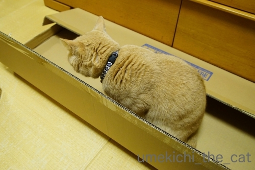
細長い箱は新鮮ですか？

中の物を出し始めると興奮度アップ！
ガサガサ音を聞いていると気持ちが高まってくるんでしょうか。
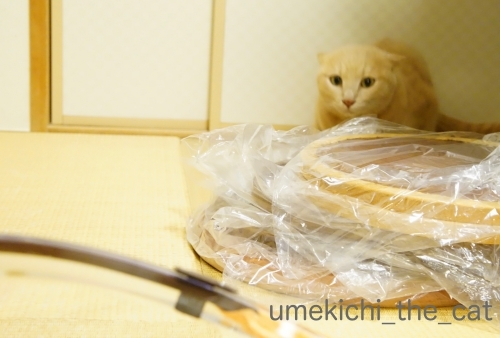
ねらって・・・
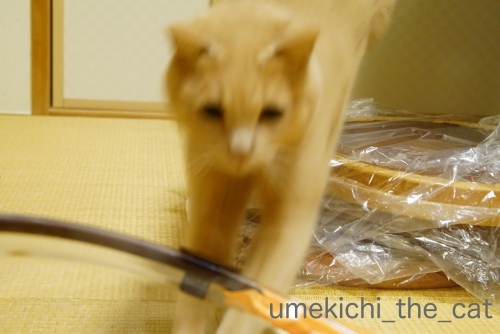
ばびゅっと(≧▽≦)
（臨場感を重視しております）
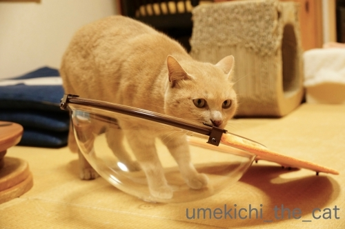
これはー！

なんやーー！！

なんなんやーーー！！！

組み立てるおっとと

それを見守る梅吉。
キャットタワー、クリアハンモック付きを買いました！
正確には某サイトで溜まっていたポイントでゲットしました＾＾
更にいうならば
『梅吉が毎朝の添い寝＆お膝活動＆猫見風呂で貯めたおとーさんポイントでゲットした』
だそうです(*>艸<)
旅行に使う、普段買わないようなお酒を買う、ふるさと納税に使う
（ポイントをふるさと納税に使用出来るんですね。納税した分は還付されるので
これが一番割りの良い使い方かもしれません）
など話が出たのですが梅吉用品に化けましたw
このタワー、リュカさんちのと全く同じなの＾＾

さ！出来ましたよ。
さてさて梅吉の反応はいかに！？続きます＾＾
その同じタワーを持つリュカさんが旅の途中大阪に寄ってくれました。
くつしたにゃんさんと３人で集合！

コロル二世くんとくつしたにゃんさんのにゃんこの化身達。

昼間っから泡だ赤だ白だと飲みましたよ＾＾
酔っ払ってもちゃんと新幹線に乗れるように（爆）
新大阪駅直結の駅ビルアルデ新大阪に行ったのですがここ便利です！
平日昼過ぎでしたが並んでいるお店もありました。利用客、多いみたい。
どっしり腰を落ち着けて飲んで喋る気満々だったので
パシオン・エ・ナチュールというワインのお店に席を予約。
一年分くらい喋って楽しかったー！
東京？大阪？どっちかでまた会おうね0(≧▽≦)0
↑ガブッと一押し↑
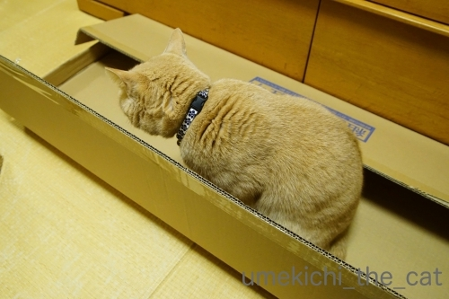
細長い箱は新鮮ですか？

中の物を出し始めると興奮度アップ！
ガサガサ音を聞いていると気持ちが高まってくるんでしょうか。
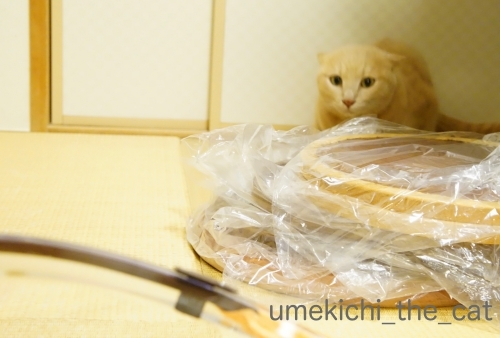
ねらって・・・
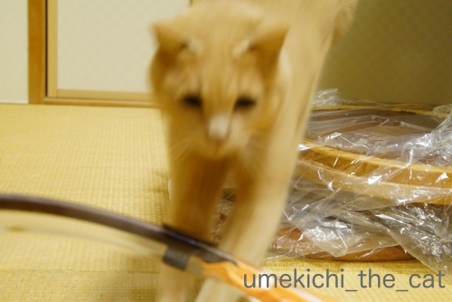
ばびゅっと(≧▽≦)
（臨場感を重視しております）
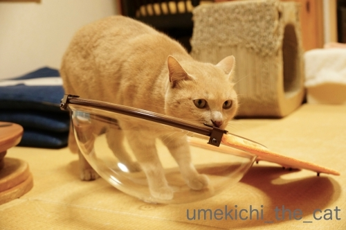
これはー！

なんやーー！！

なんなんやーーー！！！

組み立てるおっとと

それを見守る梅吉。
キャットタワー、クリアハンモック付きを買いました！
正確には某サイトで溜まっていたポイントでゲットしました＾＾
更にいうならば
『梅吉が毎朝の添い寝＆お膝活動＆猫見風呂で貯めたおとーさんポイントでゲットした』
だそうです(*>艸<)
旅行に使う、普段買わないようなお酒を買う、ふるさと納税に使う
（ポイントをふるさと納税に使用出来るんですね。納税した分は還付されるので
これが一番割りの良い使い方かもしれません）
など話が出たのですが梅吉用品に化けましたw
このタワー、リュカさんちのと全く同じなの＾＾

さ！出来ましたよ。
さてさて梅吉の反応はいかに！？続きます＾＾
その同じタワーを持つリュカさんが旅の途中大阪に寄ってくれました。
くつしたにゃんさんと３人で集合！

コロル二世くんとくつしたにゃんさんのにゃんこの化身達。

昼間っから泡だ赤だ白だと飲みましたよ＾＾
酔っ払ってもちゃんと新幹線に乗れるように（爆）
新大阪駅直結の駅ビルアルデ新大阪に行ったのですがここ便利です！
平日昼過ぎでしたが並んでいるお店もありました。利用客、多いみたい。
どっしり腰を落ち着けて飲んで喋る気満々だったので
パシオン・エ・ナチュールというワインのお店に席を予約。
一年分くらい喋って楽しかったー！
東京？大阪？どっちかでまた会おうね0(≧▽≦)0
お手手とお顔の使い方 [梅吉]
〜本日、月曜日はお出かけして来ます。みな様のブログへは火曜日から遊びに伺いますね＾＾〜

行き倒れっぽくも見えますが幸せ「ちゅうちゅう」タイムです。
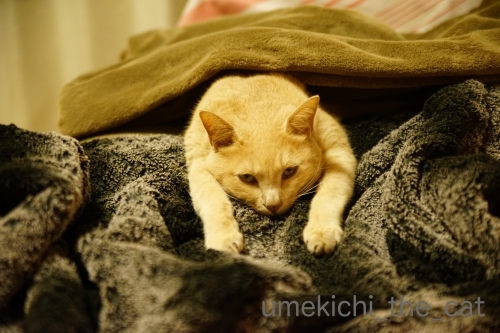
お手手がびよ〜んって伸びてきちゃうんですよね＾＾

こんな格好のまま寝ちゃうんですよ。
このお手手は器用でもあります。
（18秒。音無しです＾＾）
手も器用だけど顔も器用かも、ですねwww
〜真面目な健康のお話〜
（結果は全く問題なし、だったので安心してお読みください）
堀ちえみさん舌がんのニュース。ご記憶の方も多いと思います。
ニュースを聞いた時ちょうど私も舌の付け根から舌の側面にかけてちょっとした違和感がありました。
口内炎も出来やすいので気になってかかりつけの歯科の医師に相談すると
紹介状を書くので大きな病院へ行ってくださいとのこと。
（この時点で99%問題はないとの見立てだったのですが専門医から太鼓判もらって、と）
で、総合病院の口腔外科を受診しました。
口腔外科で看護師の問診でも医師にもしつこく聞かれたのが
「食べ物が飲み込み難いかどうか？」でした。
舌がんは「飲み込み難い」症状がキーワードの様です。
（加齢による嚥下力の低下、咽頭がんそのものの可能性もありますが）
食事の時の違和感は全くなかったのでこの点はクリア。
気になる舌の違和感は腫瘍などが出来ていると部分的に硬くなったりするようなんですが
触診でもその症状は全くなし。
むしろとっても健康な口内状況ですと褒められました。
時々感じる違和感は扁桃腺にちょっとした異常があると
その影響が舌にも出ると思われますとの事でした。
思えば風邪っぽい時や頭の痛い時に舌の違和感があったかも。やれやれ。
心配はしてなかったのですがやっぱり診てもらって良かったです。
歯科でも口腔外科でもそうだったのですが
口の中の診察では舌を前に右に左に引っ張られて舌の付け根等をぐいぐい指で押されるので
「ぐえっ」となるし結構辛いです。
もし受診される方がいらっしゃったら覚悟して行ってくださいね。
舌を前に右に左に引っ張られた経験の持ち主はそんなにいなかろう、と記事にしてみました。
↑ガブッと一押し↑

行き倒れっぽくも見えますが幸せ「ちゅうちゅう」タイムです。
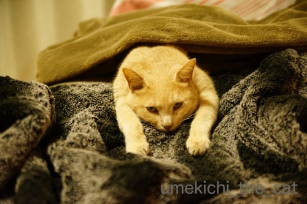
お手手がびよ〜んって伸びてきちゃうんですよね＾＾

こんな格好のまま寝ちゃうんですよ。
このお手手は器用でもあります。
（18秒。音無しです＾＾）
手も器用だけど顔も器用かも、ですねwww
〜真面目な健康のお話〜
（結果は全く問題なし、だったので安心してお読みください）
堀ちえみさん舌がんのニュース。ご記憶の方も多いと思います。
ニュースを聞いた時ちょうど私も舌の付け根から舌の側面にかけてちょっとした違和感がありました。
口内炎も出来やすいので気になってかかりつけの歯科の医師に相談すると
紹介状を書くので大きな病院へ行ってくださいとのこと。
（この時点で99%問題はないとの見立てだったのですが専門医から太鼓判もらって、と）
で、総合病院の口腔外科を受診しました。
口腔外科で看護師の問診でも医師にもしつこく聞かれたのが
「食べ物が飲み込み難いかどうか？」でした。
舌がんは「飲み込み難い」症状がキーワードの様です。
（加齢による嚥下力の低下、咽頭がんそのものの可能性もありますが）
食事の時の違和感は全くなかったのでこの点はクリア。
気になる舌の違和感は腫瘍などが出来ていると部分的に硬くなったりするようなんですが
触診でもその症状は全くなし。
むしろとっても健康な口内状況ですと褒められました。
時々感じる違和感は扁桃腺にちょっとした異常があると
その影響が舌にも出ると思われますとの事でした。
思えば風邪っぽい時や頭の痛い時に舌の違和感があったかも。やれやれ。
心配はしてなかったのですがやっぱり診てもらって良かったです。
歯科でも口腔外科でもそうだったのですが
口の中の診察では舌を前に右に左に引っ張られて舌の付け根等をぐいぐい指で押されるので
「ぐえっ」となるし結構辛いです。
もし受診される方がいらっしゃったら覚悟して行ってくださいね。
舌を前に右に左に引っ張られた経験の持ち主はそんなにいなかろう、と記事にしてみました。
渾身のねこぱんち [梅吉]
いきなりですが、がんばるおかーさんです(*>艸<)
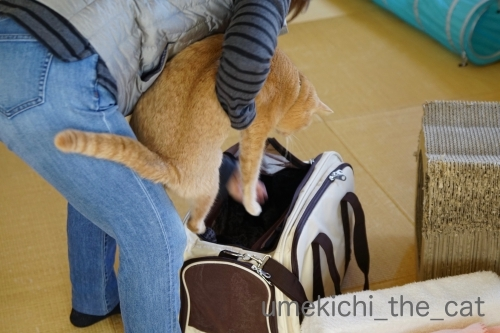
９日は梅吉の定期診察でした。
（梅吉は高脂血症＝中性脂肪値が高い持病があるので日々飲み薬と定期診察が必要です。
梅吉の高脂血症は生活習慣ではなく体質です。）
あごニキビで受診したのが約２週間前だったのでまだ病院の記憶が生々しかったのでしょうか。
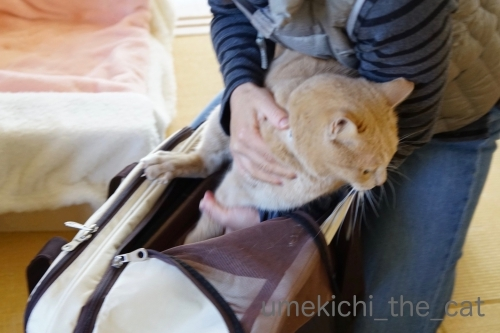
なかなかキャリーに入ってくれません。いつもはあっけないくらいすんなり入るのに！
この後おっともカメラを置いて二人でぎゅっとイン。
ちょっと可哀想に見えるかもしれませんがこういう時はあまり時間をかけずに
勢いで入れてしまった方がお互いダメージが少ないかと思います。

![[猫]](https://blog.ss-blog.jp/_images_e/101.gif) やっぱり ここかいな（ぷんすか）
やっぱり ここかいな（ぷんすか）
今日はちっくんしますよ。がんばってくださいね。

フー！シャー！！言う割には病院スタッフの方におとなしく抱っこされますw
前回の定期診察で一部お薬が変わって約２ヶ月。
その効き目を見るための採血だったのですが結果は良好！
体重は若干増えていましたが中性脂肪値は下がっていました。
＝体重の増えた分は筋肉という事になるので良い兆候と。
このままお薬を続けて体重を現状維持で行きましょう、という事になりました。

あごの状態も見てもらいますよー。
こちらは良くなってはいませんが悪化の様子はないので
「ぽんぽんぽん」の優しい消毒を続けます。
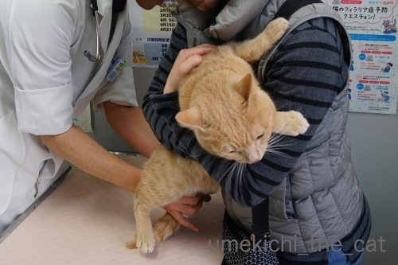
診察の終わり採血後に巻いた包帯を取ってくれたのですが・・・
梅吉さんこれにえらくご立腹![[爆弾]](https://blog.ss-blog.jp/_images_e/154.gif)
私が両手を離した瞬間に先生に向かって渾身のねこぱーーーんちっ！！（ただし、すか〜っ）
こういう場面はさすが先生。場数を踏んでいらっしゃる。
梅吉のパンチもなかなかでしたが先生の身のかわし方の素早かった事(・o・)
獣医は動体視力と反射神経が良くないと出来ない職業かもしれませんねーwww
「梅吉！（当たらなかったけど）すごいパンチだったね！！」と
アホ夫婦は我が子の活躍を褒め讃えながら帰宅したのでした(⌒-⌒;

わしの ぱんちをかわしよった・・・
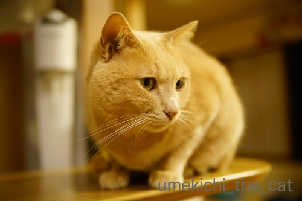
せんせいは ただもんやないな
病院、お疲れ様でしたね＾＾
次回は３ヶ月後ですよー。
↑ガブッと一押し↑
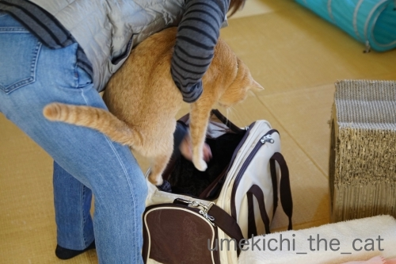
９日は梅吉の定期診察でした。
（梅吉は高脂血症＝中性脂肪値が高い持病があるので日々飲み薬と定期診察が必要です。
梅吉の高脂血症は生活習慣ではなく体質です。）
あごニキビで受診したのが約２週間前だったのでまだ病院の記憶が生々しかったのでしょうか。
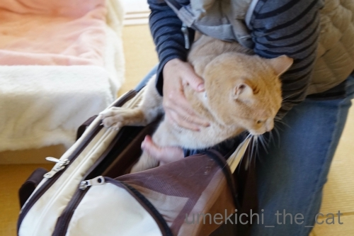
なかなかキャリーに入ってくれません。いつもはあっけないくらいすんなり入るのに！
この後おっともカメラを置いて二人でぎゅっとイン。
ちょっと可哀想に見えるかもしれませんがこういう時はあまり時間をかけずに
勢いで入れてしまった方がお互いダメージが少ないかと思います。

今日はちっくんしますよ。がんばってくださいね。

フー！シャー！！言う割には病院スタッフの方におとなしく抱っこされますw
前回の定期診察で一部お薬が変わって約２ヶ月。
その効き目を見るための採血だったのですが結果は良好！
体重は若干増えていましたが中性脂肪値は下がっていました。
＝体重の増えた分は筋肉という事になるので良い兆候と。
このままお薬を続けて体重を現状維持で行きましょう、という事になりました。

あごの状態も見てもらいますよー。
こちらは良くなってはいませんが悪化の様子はないので
「ぽんぽんぽん」の優しい消毒を続けます。
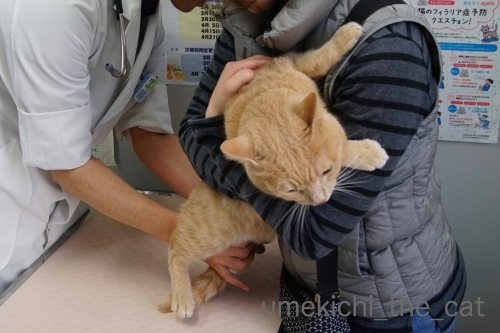
診察の終わり採血後に巻いた包帯を取ってくれたのですが・・・
梅吉さんこれにえらくご立腹
私が両手を離した瞬間に先生に向かって渾身のねこぱーーーんちっ！！（ただし、すか〜っ）
こういう場面はさすが先生。場数を踏んでいらっしゃる。
梅吉のパンチもなかなかでしたが先生の身のかわし方の素早かった事(・o・)
獣医は動体視力と反射神経が良くないと出来ない職業かもしれませんねーwww
「梅吉！（当たらなかったけど）すごいパンチだったね！！」と
アホ夫婦は我が子の活躍を褒め讃えながら帰宅したのでした(⌒-⌒;

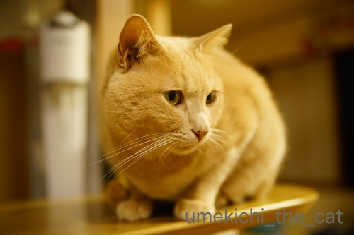
病院、お疲れ様でしたね＾＾
次回は３ヶ月後ですよー。
髪も伸びる季節？ [梅吉]


うそやで これは「すりこ」いうみせの おひなさまかつらや
うえにあるんは おだいりさまの かんむりやて

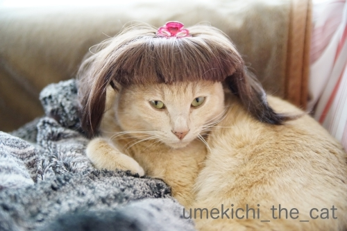

せや！ いまおかーさんのまえがみも こんなんやで
びよーしさんいうひとと こみゅにゅけーしょんがあかんかったて
すち子っぽいてなげいとったわwww
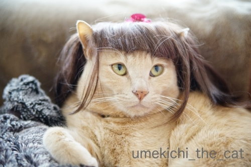
このペット用かつらは3COINSで買いました。御雛様バージョンとお内裏様バージョンがありましたよ。
御雛様のはピンクっぽい髪色だったのでこちらを購入＾＾
猫耳がをうまく出せるように切り込みを入れようと思ったのですが
ハサミを入れると髪の毛がどんどん抜けちゃうような構造なので断念w
前髪の隙間からうまく耳を出して一筋長いのを垂らすと良い感じに(*>艸<)
こんな女の子いますよね。
梅吉のコメントにもありますが、今、私の前髪はかつてないくらいのぱっつんw
すち子さんほど短くはないのですが前髪と横髪の長さの比率がすち子感。
最近美容室を変えたのですがまだ美容師さんとの意思疎通が今ひとつなんですよね。
美容師さんは人当たりも良いし仕上がりも綺麗なので気に入ってはいるんですけど。
好みや似合う似合わないはある程度の期間通わないと把握してもらえないかなぁ。
髪は伸びるからあまり気にしてませんけど

ネタがどんどん溜まっているので今日のZEPETOはお休みします。
（作業も進んでいない・・・）
いつも狙ってる？ [梅吉]

ゴミ捨ての時、フタを閉め忘れているとカフェオレ色のひとが毎回入ってますw
このタイミング、逃しませんよ(*>艸<)
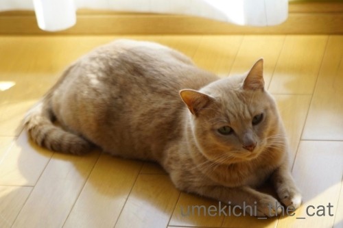
日差し＋エアコンの温風でフローリングがあったまってるタイミングも逃しません。
比較的暖かい日にはフローリングでコロンコロンする姿も見られるようになりました＾＾
今日は後半が長めなので梅吉ネタはこれにて！
後半はおばちゃんの願望の表れ？
妄想ZEPETO劇場でーす(^_－)☆
（スルー大歓迎！！）
今年のブーケとビールと梅吉 [梅吉]
最近は短時間ですがベランダ活動を楽しんでいる梅吉さん。
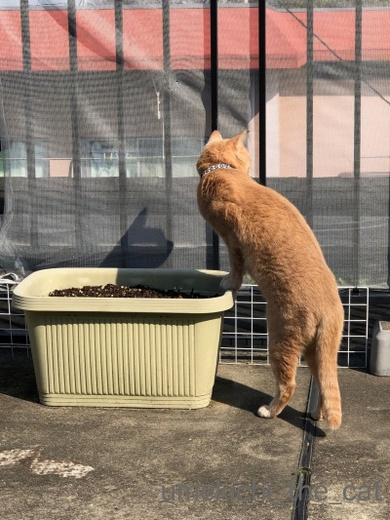


これは なんやー！なんなんやーー！！

結婚記念日が近いのでおとーさんが家族みんなにってブーケを買ってくれましたよ＾＾
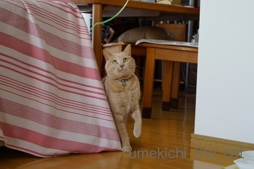
梅吉さんにも素敵なプレゼントが！
ブーケを縛ってたヒモです！高級品！！
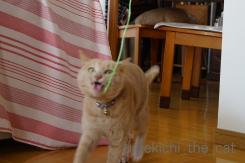
ぶれっぶれだけどイイ表情してます0(≧▽≦)0
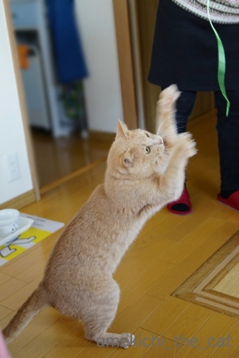
立ち上がってねこぱんちの連打w
臨場感をお楽しみください＾＾

ブーケの全体像です。
この配色大好きなんです(≧▽≦)

毎年オーダーしているビールはこんなデザインになりました。
ブログアップ用にZEPETOの絵文字を利用して貼り付けてみましたよ。
おっとのアバターは私の顔を男性バージョンにしたものです。
でもなんか似てるんですよねーw
私がちぃママなのはご愛嬌(〃▽〃)
あ、ビールの実物はアバター加工してない普通の写真です＾＾

カフェオレ色の梅吉

梅吉 2023年8月10日 永眠


梅吉と出会った譲渡会

犬猫の理由なき殺処分ゼロ
妄想広告
UMEKICHI 光

爆発的に早い！
時々攻撃的！
Thanks to Mr.Boss365
爆発的に早い！
時々攻撃的！
Thanks to Mr.Boss365